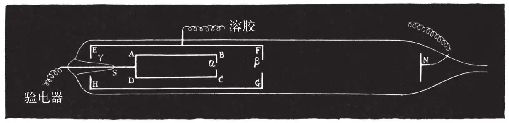
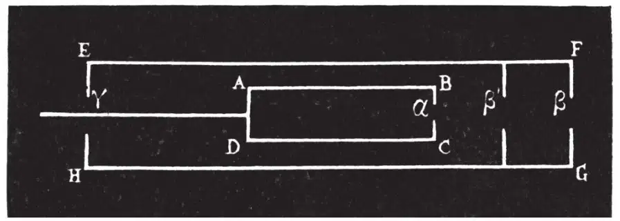

英文
英文佩兰
编者按
物理学家们对在真空管中把能量从负极（阴极）带到正极的阴极射线感到迷惑不解。实验可以证明它们来自阴极，但不能说明它们到底是什么。法国物理学家让·佩兰在这篇经典论文中用实验揭开了阴极射线的神秘面纱。他在阴极射线管内放置了一个与验电器相连的金属圆柱体，验电器可以测量进入其中的电荷。当阴极射线进入真空管时，佩兰检测到了大量的负电荷。佩兰推测这些载流子是在阴极附近产生的负离子。实际上它们就是一年之后汤姆逊发现的电子。 英文
（1）现在可以解释阴极射线性质的假说有两种。 英文
一部分物理学家和戈尔德施泰因、赫兹、莱纳德的意见一致，认为这种现象和光一样，是由以太的振动引起的†，或者它就是一种短波长的光。很容易就可以理解，这种射线可能是沿直线传播的，能激发磷光，而且可以使照相干版感光。 英文
另一部分人则与克鲁克斯、汤姆逊持相同的观点，认为这种射线是由带负电的物质组成，并以极快的速度运动。用这种假说可以解释它们的力学性质，也可以很容易地说明为什么它们在磁场中的路径会弯曲。 英文
后一种假说启发我进行了一些实验，我将在这里简单地描述这些实验，暂时先不管这个假说是否能解释目前所有已知的现象，或者是否只有这一种假说可以解释这些现象。它的支持者认为阴极射线是带负电的，而据我所知，这种带电性还没有被确认，我首先要确定它是否带电。 英文
（2）为了达到这个目的，我将借助电磁感应定律，用这个定律，我们可以检测引入闭合导电体内部的电量，并且进行定量测量。因此，我让阴极射线通过法拉第圆筒。为此我设计了如图1所示的真空管。A B C D是一根管子，在B C面中心的α处有一个小孔。正是这根管子起到了法拉第圆筒的作用。一根焊接在管壁S处的金属线将圆筒和外部的验电器连接起来。 英文

图1 英文
E F G H是另一个圆筒，永久接地，并且在β、γ处穿有两个小孔；这个圆筒可以屏蔽外界对法拉第圆筒的干扰。最后，在F G前面大约0.1米的地方有一个电极N。电极N作为阴极，屏蔽圆筒E F G H作为阳极。在这样的条件下，将一束阴极射线通入法拉第圆筒，这个圆筒将一直带负电。 英文
真空管可以放置在电磁铁的两极之间。当电磁铁通电时，阴极射线将发生偏转，不能再通入法拉第圆筒，这个圆筒也将不再带电，而当电磁铁断电之后，法拉第圆筒马上又带电了。 英文
简单地说就是，当且仅当有阴极射线进入时，法拉第圆筒带负电，所以阴极射线一定带负电。 英文
射线所带的电量可以被测量出来。我还没有完成这项研究，但是我可以给出一个有关所获电量的数量级的概念，对于一个压力为20微米汞柱的真空管，将初级线圈截断，法拉第圆筒接收的电量足以使600单位（厘米克秒制）的电容器的电势差提高到300伏特。 英文
（3）阴极射线带负电，根据电荷守恒定律，我们应该能在某处找到相应的正电荷。我确信我已经在阴极射线产生的地方找到了正电荷，我认为它们向相反的方向运动，而后撞在了阴极上。为了证明这种说法，只要用一个中空的阴极就行，在阴极上穿一个小孔，以使一部分被吸引过来的正电荷可以由此通过。进入阴极的正电荷会影响阴极内部的法拉第圆筒。 英文
带有小孔β的屏蔽圆筒E F G H满足以上条件，因此这一回我用E F G H作阴极，电极N作阳极。这样，法拉第圆筒就会一直带正电。其所带正电荷和前面所测的负电荷的数量级相同。 英文
这说明，在阴极发射负电荷的同时，正电荷也在向阴极运动。 英文
我下决心要确定这种正电流是否能形成另一个和阴极射线完全对称的射线系统。 英文
（4）为此我构造了一个和前面类似的管子（见图2），与前面管子唯一的不同之处是，在法拉第圆筒和小孔β之间放置了一个金属膜片，膜片上有一个小孔β'，这样，从β进入的正电荷只有在也通过β'的情况下才能作用于法拉第圆筒。我用这个装置重复了上面的实验。 英文

图2 英文
当N作为阴极时，由阴极发射的射线可以顺利地通过β和β'两个孔，使验电器的两个叶片张得很大。但是当屏蔽圆筒作为阴极时，根据前述的实验，通过β进入的正电流并没有使验电器的金箔张开，除非是在压力很低的情况下。当用静电计代替验电器时，可以看到正电流的确存在但非常微弱，并随着压力的减小而增大。在20微米汞柱条件下进行的一系列实验中，这一正电流可以把2,000单位（厘米克秒制）的电容器的电势差提高到10伏特；在压力为3微米汞柱时，同样时间内电势差被提高到了60伏特。‡ 英文
利用磁铁可以完全地抑制这种作用。 英文
（5）总的来说，把阴极射线看作是紫外线的假说似乎不太容易解释这些实验结果。另一方面，这些实验结果与认为阴极射线是一种物质辐射的假说符合得很好，在我看来，这些实验结果恐怕只能这么解释。 英文
在阴极附近，电场强度强到足以把一定量的残余气体分子打成碎片（变成离子）。负离子向着电势增加的方向运动，速度很大，这形成了阴极射线，它们的电量很容易被测定，从而其质量（100,000库仑对应1克当量）也很容易得到。正离子向相反方向运动，形成一个发散的尾巴，对磁场非常敏感，准确地说这就不是辐射了。§ 英文
（王锋 翻译；江丕栋 审稿）
* 这篇文章翻译自让·佩兰在1895年12月30日向巴黎科学院宣读的论文。
† 这种振动可能与光有些不同。最近，尧曼（其猜想曾经被普安卡雷批判过）提出这种振动可能是纵向的。
‡ 真空管的爆裂使我暂时无法再在低压条件下研究这一现象。
§ 这项研究是在师范学院的实验室和索邦大学佩拉的实验室中进行的。